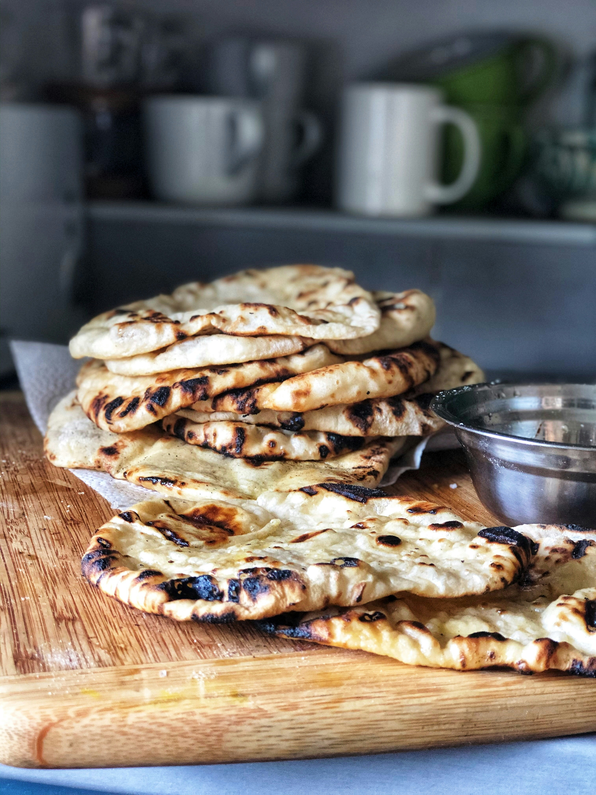
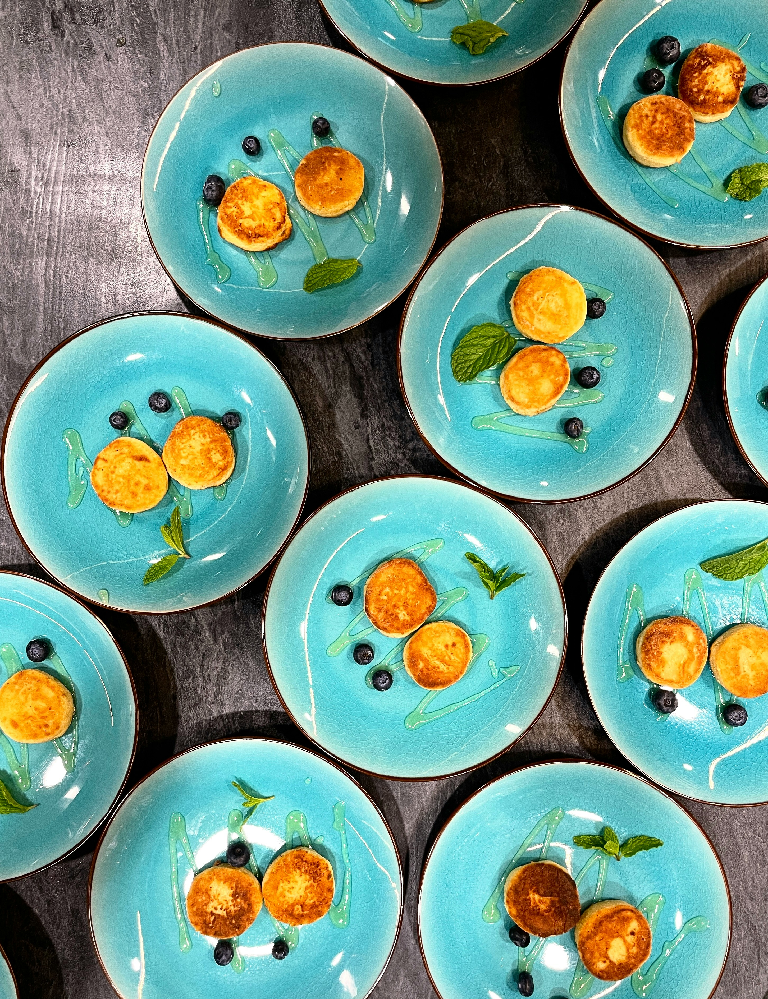

AIP Plattbröd
Ett mjukt och följsamt AIP-vänligt plattbröd som passar perfekt till wraps, smörgåsar eller som tillbehör till soppor och grytor. Enkelt att göra och baserat på kassavamjöl.
Ingredienser (ca 4 plattbröd)
- 1 ½ dl kassavamjöl
- 1 msk kokosmjöl
- ½ tsk salt
- 1 tsk olivolja eller avokadoolja
- 1 ¼-1 ½ dl varmt vatten
Gör så här
- Blanda kassavamjöl, kokosmjöl och salt i en skål.
- Tillsätt oljan och häll i det varma vattnet lite i taget.
- Arbeta ihop degen tills den blir mjuk och formbar.
- Dela degen i fyra delar och rulla varje del till en boll.
- Kavla ut varje boll mellan två bakplåtspapper tills den blir tunn.
- Stek plattbröden i en torr stekpanna på medelvärme, 1-2 minuter per sida.
- Servera direkt eller låt svalna och använd som wrap eller bröd.
Tips: Täck de färdiga plattbröden med en kökshandduk så håller de sig mjuka.
AIP Pannkakor
Mjuka och lättlagade AIP-vänliga pannkakor gjorda på banan och kokosmjöl. Perfekta till frukost eller som ett enkelt mellanmål.
Ingredienser (ca 6 små pannkakor)
- 1 mogen banan
- 2 msk kokosmjöl
- 1 msk kokosmjölk eller vatten
- 1 msk smält kokosolja
- 1 nypa salt
- Kokosolja till stekning
Gör så här
- Mosa bananen i en skål tills den blir helt slät.
- Tillsätt kokosmjöl, kokosmjölk, smält kokosolja och salt.
- Blanda till en tjock men smidig smet.
- Värm en stekpanna på medelvärme och smält lite kokosolja.
- Klicka ut små pannkakor i pannan.
- Stek 2-3 minuter per sida tills de är gyllene.
- Servera varma med bär eller frukt.
Tips: Gör pannkakorna små så blir de lättare att vända.
AIP Matbananbröd

Ett mjukt och saftigt AIP-vänligt bröd gjort på gröna matbananer. Naturligt glutenfritt och perfekt som frukostbröd eller tillbehör till soppor och grytor.
Ingredienser
- 2 gröna matbananer
- 2 msk smält kokosolja
- 1 tsk äppelcidervinäger
- ½ tsk salt
- ½ tsk bikarbonat
- 3 msk kokosmjöl
Gör så här
- Sätt ugnen på 175°C och klä en liten brödform med bakplåtspapper.
- Mixa matbananerna släta.
- Tillsätt kokosolja, äppelcidervinäger och salt och mixa igen.
- Blanda bikarbonat och kokosmjöl och rör ner i smeten.
- Låt smeten svälla i några minuter.
- Häll smeten i formen och jämna till ytan.
- Grädda i 35-40 minuter tills brödet är fast och gyllene.
- Låt svalna helt innan du skär upp det.
Tips: Rosta gärna brödskivorna lätt innan servering.